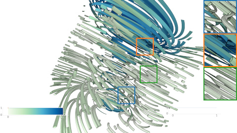

I am a research student pursuing my PhD under Prof. Dr.-Ing. Carsten Dachsbacher . Previously, I earned my M.Sc. (2011) and B.Sc. (2004) from the Computer Science Department, Faculty of Computer and Information Sciences, Ain-Shams University, Egypt.
Research Interests
- Computer graphics
- Scientific visualization
- Parallel processing
- Real-time and interactive rendering techniques
Publications
|  | Mahmoud Zeidan, Christoph Peters, Tobias Rapp, and Carsten Dachsbacher. “Versatile Geometric Flow Visualization by Controllable Shape and Volumetric Appearance.” in Smart Tools and Applications in Graphics (STAG), 2022. Project page |

|
Mahmoud Zeidan, Tobias Rapp, Christoph Peters, and Carsten Dachsbacher. “Moment-Based Opacity Optimization.” in Eurographics Symposium on Parallel Graphics and Visualization (EGPGV), 2020. Project page |

|
Mahmoud Zeidan, Taymoor Nazmy, and Mostafa Aref. “GPU-based Out-of-Core HLBVH Construction.” in Eurographics Symposium on Rendering (EGSR) – Experimental Ideas & Implementation (EI&I), 2015. Link |
Thesis

|
Zeidan, Mahmoud, Applying Parallel Processing Approach for Interactive Global Illumination, M.Sc. thesis, Ain-Shams University, Egypt, July 2011. Project page |

|
Zakaria, Ahmed, Zeidan, Mahmoud, and Hamdy, Ahmed, Photonix: A 3D Modeling Tool and Global Illumination Renderer using Photon Mapping, B.Sc. thesis, Ain-Shams University, Egypt, July 2004. Project page |
Hobbies
-
Painting and modeling on physical and digital media
I use art to complement my research in computer graphics and enjoy digital drawing in GIMP, Inkscape, Krita, Procreate, Clip Studio Paint, and 3D modeling in Blender.
My art profile on CARA | Interesting digital art tools - Woodworking – bringing geometry and 3D concepts into practical creations.
- Nature walks – simply enjoying time outdoors and fresh air.
- Writing and blogging – Arabic projects in progress while finishing PhD thesis.